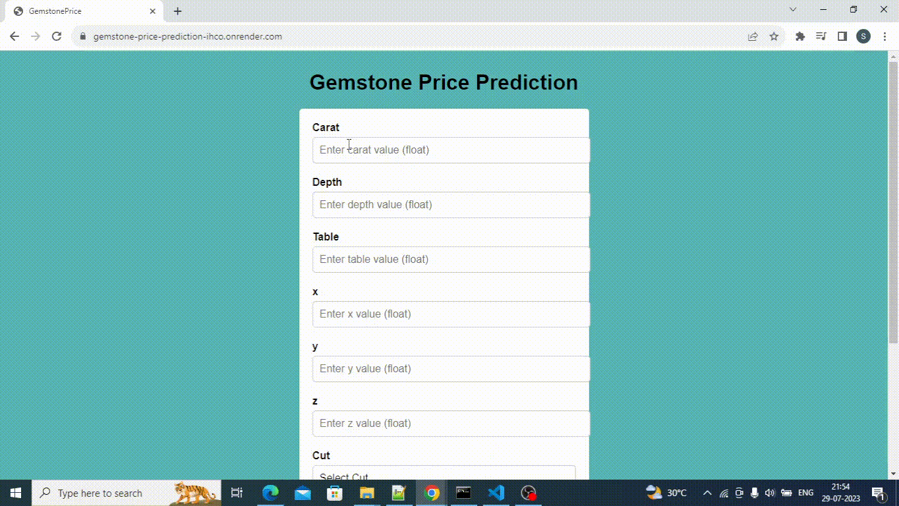

Soumyadeep Saha
Data Scientist
Projects
Python Movie Web-Scraper
Python movie web scraping project is a script that retrieves film data from popular movie websites using web scraping libraries like BeautifulSoup and requests.
It extracts movie titles, release dates, ratings, and summaries, displaying the information on a user friendly website
Demo: movie-scraper.onrender.com
Code: SS524/MovieScraper
Gemstone Price Prediction
The Gemstone Price Prediction project aims to develop a machine learning model that forecasts the future prices of various gemstones based on historical data and relevant market indicators.
By employing advanced algorithms, the system analyzes factors such as gemstone type, carat weight, cut, clarity, color, and market trends to generate accurate predictions. The dataset has been preprocessed, and feature engineering techniques has been applied to enhance model performance. The model is trained using supervised learning methods, validated, and fine-tuned to achieve optimal accuracy. Additionally, data visualization tools has been utilized to gain insights into price patterns and trends.
Phishing Detection
The phishing domain detection project utilizes logistic regression with hyperparameter tuning to identify potential phishing domains. It analyzes URL and domain level features to distinguish between legitimate and malicious websites, making it effective in detecting phishing attempts.
Demo: phishing-detection-vh29.onrender.com/home
Code: SS524/phishing_detection
Job Recommendation System
The project involved diving deep into natural language processing (NLP) to understand and extract valuable information from job descriptions and user preferences. By analyzing the text using NLP techniques, I was able to identify key job attributes and match them with user profiles.
1️⃣ To make accurate recommendations, I implemented cosine similarity, a famous mathematical measure, to compare the similarities between user preferences and job descriptions. This allowed the system to identify each user's most relevant job opportunities, increasing the chances of finding the perfect fit.
2️⃣ To provide a seamless user experience, I built a website using Flask, a powerful web framework in Python. By leveraging the render_template module, I created an intuitive and interactive platform where users can input their preferences and receive personalized job recommendations instantly.
Demo: job-recommendation-system.onrender.com/home
Code: SS524/Job_Recommendation_System

Sentiment Analyzer
It is a website, which can be used to check the sentiment of any movie reviews
1️⃣ To develop this sentiment analyzer, I utilized the renowned IMDB movie review dataset. This dataset contains a vast collection of movie reviews, allowing me to create a robust and accurate model.
2️⃣ I employed the powerful word2vec technique, which is widely recognized for its ability to capture semantic relationships between words. By training word2vec on my dataset, I ensured that my sentiment analyzer comprehends the intricate nuances of language.
3️⃣ For the training phase, I implemented an LSTM (Long Short-Term Memory) model. LSTM is a state-of-the-art deep learning model that excels at analyzing sequential data. Its ability to retain long-term dependencies makes it ideal for understanding the context and sentiment of movie reviews.
4️⃣ To streamline the development process, I incorporated MLOps tools such as DVC. These tools enable me to efficiently track the status of each pipeline, ensuring that the sentiment analyzer operates effectively and meets our expectations.
Demo: sentiment-analyzer-4c49.onrender.com/home
Code: SS524/sentiment_analyzer

Football Player Image Clssification
This is an image classifier. I have used the images of three different football players (Messi, Ronaldo, Neymar) to train my model.
1️⃣ To crop the face from the image, I have used Haar Cascade classifier from open-cv.
2️⃣ CNN has been used in training the model
Demo: football-player-classify.onrender.com
Code: SS524/football_player_classification

Covid Global data analysis using Power BI
Data exploration has been performed on the Covid-19 global dataset using SQL(Structured Query Language).
SQL server has been connected with the Power BI for the visualization.
YouTube dataset analysis using Excel
I have created an Excel Dashboard from the YouTube dataset.
This dashboard shows the trend of YouTube genres over the years. Also, it visualises the most viewed categories of videos and the sentiment associated with them.
EDA on Sales data using Python Libraries
Python libraries, such as Pandas, Matplotlib, have been used to analyze and visualize sales data
Code: SS524/sales_analysis